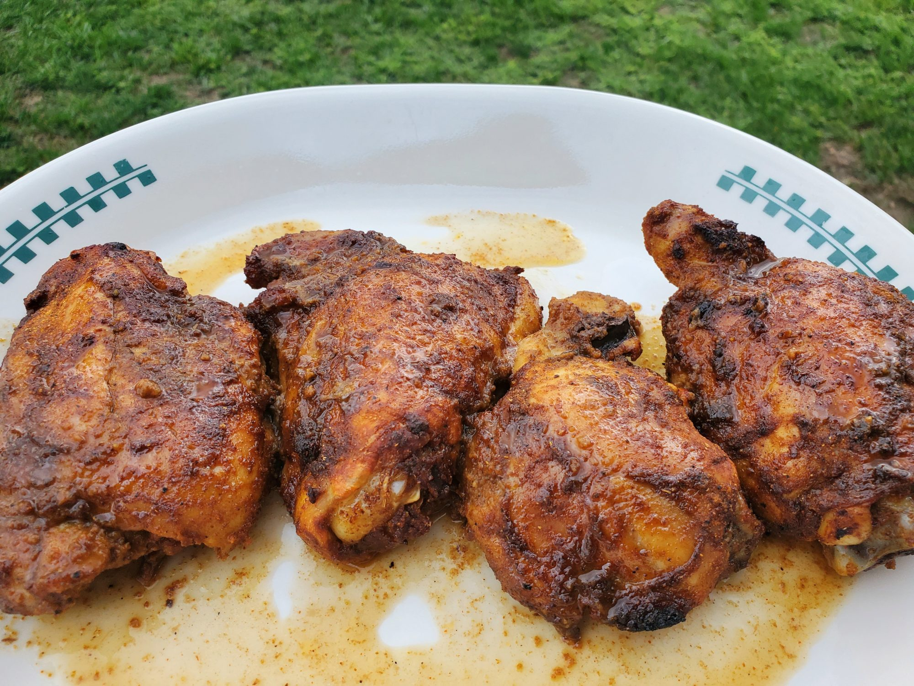

Pakistani-Style Roast Chicken Thighs
Ingredients
- 2 pounds chicken thighs
- 1 lemon, juiced
- 2 tablespoons ketchup
- 2 teaspoons garlic powder
- 2 teaspoons onion powder
- 2 teaspoons ground coriander
- 2 teaspoons ground cumin
- 2 teaspoons garam masala
- 2 teaspoons brown sugar
- 2 teaspoons chili powder
- 1 teaspoon paprika
- 1 teaspoon dried sage
- 1 teaspoon dried mint
- cooking spray
Steps
- Place chicken thighs in a bowl.
Season with lemon jioice, ketchup, garlic powder, onion powder, corander, cumin, garam masala, brown sugar, chili powder, parika, sage, and mint.
Mix well, Use Clean hands to rub the seasoning on top and underneath the skin of the chicken thighs
- Cover the bowl with aluminum foil and let marinate in the refrigerator 4 hours, or overnight
- Preheat the oven to 400 degrees F(200 C).
Grease a baking dish with cooking spray.
Spread Chicken over the bottom.
- Bake in the preheat oven until teader and juicy, about 45 minutes